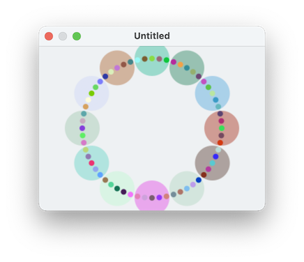

The position of a shape can also be expressed in radial coordinates. That is, with a radius and an angle. The radius means the distance from the center point x=0, y=0. The angle means the number of radians around a circle (going counterclockwise) from the direction towards the right (the positive x axis).
Here's a script which makes something that might resemble a clock:

set rad to 100
set hoursSize to 25
set minutesSize to 4
set twoPi to 6.283
tell application "SinterPixels"
repeat with n from 1 to 60
tell document 1
set ang to n * twoPi / 60
if n mod 5 is equal to 0 then
set theCircle to make new circle with properties {radius:hoursSize, line width:0, position:{angle:ang, radius:rad}}
set alpha component of the fill color of theCircle to 0.4
end if
make new circle with properties {radius:minutesSize, line width:0, position:{angle:ang, radius:rad}}
end tell
end repeat
end tellWhat does this script do? It loops from 1 to 60, and each time through the loop, it draws a circle. The angle in the radial coordinates is defined by the line
set ang to n * twoPi / 60
So that each step in the loop is 1/60th the way around the circle.
For each circle, the script checks to see if n is divisible by 5, and if so, it draws an extra, bigger circle. This line checks to see if the number n is divisible by 5, using the "modulo" operation:
if n mod 5 is equal to 0
Examples: Color Spirals